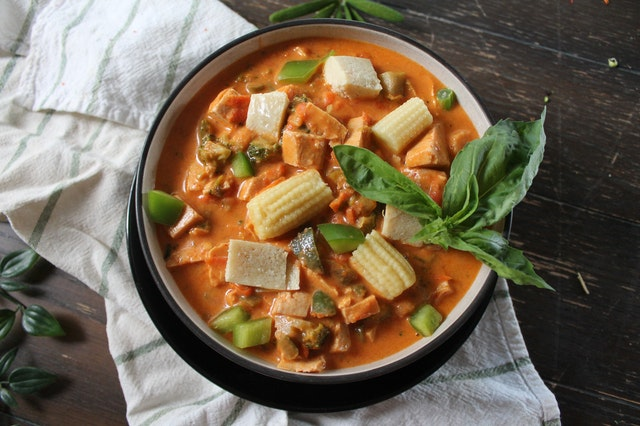

LOCRO

Ingredientes:
500 g de zapallo macre
250 g de papa blanca en cubos medianos
2 cdas. de Amarillin Sibarita
1 ¼ cdas. de Ajo Siba
1 choclo desgranado
1 cebolla roja mediana picada
100 g de arvejas
1/4 de taza de aceite vegetal
4 tazas de caldo de pollo
1 chorrito de leche evaporada
100 g de queso fresco
Orégano Molido Sibarita al gusto
Pimienta Sibarita al gusto
Sal al gusto